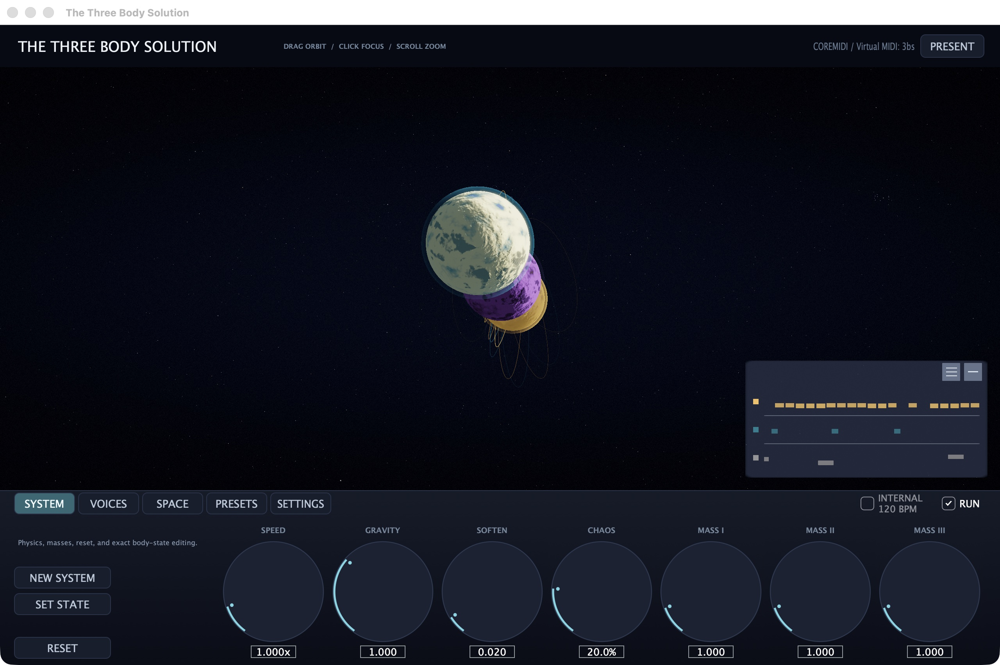

The Three Body Solution
A deterministic three-body simulation mapped to generative MIDI and a real-time Metal visualization.
macOS 13 or newer · Apple silicon · Audio Unit, VST3, and standalone

About
The project uses a fixed-step gravitational simulation to generate notes, rhythms, durations, and control data. The same initial state and transport timeline produce the same MIDI output.
The simulation engine is shared by the Logic Audio Unit MIDI effect, VST3 instrument, and standalone CoreMIDI application. It includes 24 factory systems and portable .3bs configuration files.
Downloads
v0.1.0-alpha.1 is an unsigned alpha build for Apple silicon. The binaries are ad-hoc signed but not notarized.
See the installation notes and SHA-256 checksums.
Source
The source code is available on GitHub under the AGPL-3.0-only license.